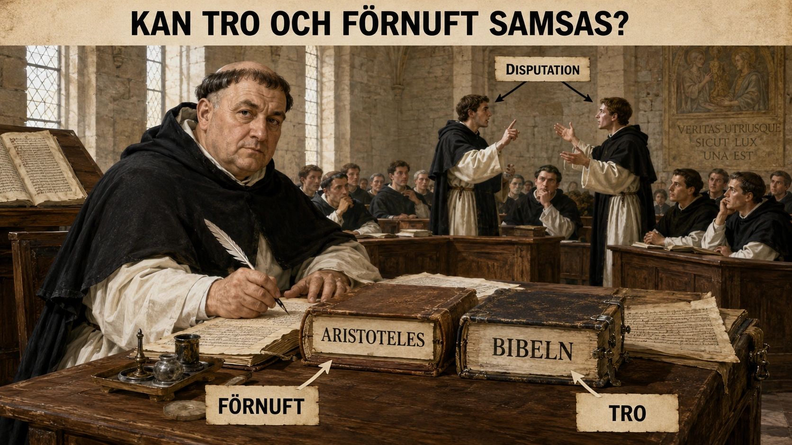

En kamp i en föreläsningssal
På ett universitet i Paris under 1200-talet sitter studenter tätt tillsammans och lyssnar. De har rest långt. Några kommer från Frankrike, andra från Italien, England eller Tyskland. Språket är latin. Böckerna är få och dyra. Läraren läser högt, förklarar, ställer frågor och pressar fram invändningar. Det är inte bara en föreläsning. Det är en intellektuell kamp.
Frågan som ligger i luften är enorm: Kan människans förnuft hjälpa henne att förstå Gud, världen och sanningen? Eller måste hon bara tro?
Den här frågan blev en av medeltidens största. Den hör ihop med universitetens framväxt och med en metod som kallas scholastik. Scholastiken var universitetens stora sätt att tänka. Den handlade om att ordna kunskap, pröva argument och försöka förena kristen tro med logiskt tänkande.
En av de viktigaste personerna i denna tradition var Thomas av Aquino.
Pojken som inte ville bli abbot
Thomas föddes omkring år 1225 i Italien, i en adlig familj. Hans familj tänkte sig troligen en kyrklig karriär för honom — kanske som abbot i ett mäktigt kloster, en post som skulle gett familjen prestige. Men Thomas hade andra planer. Han gick med i den nya dominikanorden, en orden som tagit fattigdom som ideal och som betonade predikan, studier och undervisning. För familjen var det en pinsam karriärnedgång. Enligt en berömd historia spärrade hans bröder in honom i ett torn i nästan ett år för att försöka få honom att ändra sig. Han ändrade sig inte.
Dominikanerna blev starkt knutna till universitetens värld. De skulle inte bara be och leva i kloster, utan också argumentera, undervisa och försvara kyrkans lära. Thomas studerade bland annat i Neapel, Köln och Paris. Han blev elev till Albertus Magnus, en av tidens stora lärda — så lärd att han senare kallades doctor universalis, den allmänne läraren. Men Thomas egen betydelse blev ännu större.
Aristoteles återkomst
För att förstå varför Thomas projekt var så viktigt måste vi förstå vad som hade hänt i Europa.
Under tidig medeltid hade många antika texter varit okända eller bara delvis kända i Västeuropa. Men genom kontakter med den muslimska världen, Bysans och översättningar från arabiska och grekiska började fler texter av den grekiske filosofen Aristoteles spridas. Vägen gick framför allt via två platser: Toledo i Spanien, där kristna, muslimer och judar i generationer hade översatt arabiska texter till latin, och Sicilien, där ett liknande möte mellan kulturer skedde under normandiska och staufiska härskare. När Thomas studerade kände han alltså till en hel värld av arabiska kommentarer till Aristoteles — av tänkare som Avicenna och Averroës — som var helt nya för Västeuropa.
Aristoteles hade skrivit om logik, natur, politik, etik, själen och verklighetens uppbyggnad. Det var både spännande och farligt.
Spännande, eftersom Aristoteles gav kraftfulla verktyg för att tänka logiskt om världen. Farligt, eftersom vissa idéer verkade kunna krocka med kristen tro. Om Aristoteles hade rätt om naturen, själen eller universum — hur passade det ihop med Bibeln? Kunde en hednisk filosof från antikens Grekland hjälpa kristna att förstå Guds skapelse? Eller riskerade hans idéer att leda människor bort från tron?

Thomas svar: sanningen kan inte motsäga sanningen
Thomas av Aquino svarade ungefär så här: sanningen kan inte motsäga sanningen. Om Gud har skapat världen och gett människan förnuft, då kan förnuftet inte vara Guds fiende. Rätt använt kan förnuftet hjälpa människan att förstå delar av verkligheten. Men det finns också sanningar som människan inte kan nå enbart med förnuftet — till exempel treenigheten eller inkarnationen. Där behövs uppenbarelsen, alltså det Gud visar genom tron.
Det här var inte ett enkelt "antingen eller". Thomas gjorde en skillnad mellan sådant förnuftet kan undersöka och sådant tron uppenbarar. Han menade att filosofi och teologi inte var samma sak, men att de kunde samarbeta.
Det låter kanske lugnt och balanserat, men i sin tid var det ett enormt projekt. Thomas försökte bygga broar mellan två världar: den kristna kyrkans lära och Aristoteles filosofi. Inte alla höll med. Vid universitetet i Paris fanns både de som tyckte att Thomas gick för långt i att släppa in en hednisk filosof i teologins finrum — och de som tyckte han inte gick tillräckligt långt. Han kämpade på två fronter.
Summa Theologiae — verket som ville ordna allt
Hans mest kända verk heter Summa Theologiae. Det betyder ungefär "Teologins sammanfattning". Det är ett jättelikt verk — många tusen sidor — där Thomas behandlar frågor om Gud, skapelsen, människan, synden, moralen, Kristus och frälsningen. Men det mest intressanta för oss är inte bara vad han svarar, utan hur han arbetar.
En typisk scholastisk fråga kunde vara: "Finns Gud?" eller "Kan människan veta vad som är gott?" eller "Är det rätt att föra krig?"
Thomas börjar ofta med invändningar mot sin egen ståndpunkt. Han skriver ungefär: "Det verkar som att svaret är nej, eftersom…" Sedan radar han upp argument emot det han själv tror på. Därefter kommer ett motargument, ofta från Bibeln, kyrklig tradition eller en auktoritet. Sedan ger han sitt eget svar. Till sist besvarar han invändningarna en efter en.
Detta är avgörande. Thomas låtsas inte att motståndarnas argument inte finns. Han tar upp dem, formulerar dem tydligt — ofta starkare än motståndarna själva — och försöker bemöta dem. Det är en av orsakerna till att disputationen var så viktig vid universiteten.
Disputationen — argumentation som hantverk
En disputation var en ordnad akademisk debatt. Den kunde vara hård, men den skulle följa regler. Man skulle kunna skilja mellan påstående, invändning, bevis, slutsats och motargument. Det var revolutionerande därför att kunskap inte bara handlade om att memorera en auktoritet. Man skulle också kunna pröva hur olika påståenden hängde ihop.
För en modern elev kan det här kännas bekant. När du skriver ett resonemang i skolan behöver du ofta visa orsaker, konsekvenser, exempel och motargument. Lärare i dag säger ofta: "Vad skulle någon som tycker tvärtom säga? Hur svarar du på det?" På medeltidens universitet tränade studenterna något liknande, fast på latin och med teologiska och filosofiska frågor. Den intellektuella disciplin Thomas och hans kollegor utvecklade lever alltså vidare i varje uppsats du skriver där läraren vill se motargument.
Men vi ska inte göra Thomas till en modern vetenskapsman. Han levde i en religiös värld där den kristna tron var grunden. Målet var inte att ifrågasätta allt på modernt sätt. Målet var att förstå sanningen inom en kristen världsbild. Men inom den ramen blev scholastiken ett kraftfullt sätt att tänka.
Varför Thomas är viktig
Thomas av Aquino är viktig av flera skäl.
För det första visar han hur universitetens kunskap fungerade. Det var inte bara läsning och lydnad. Det var också systematiskt tänkande, argumentation och analys.
För det andra visar han hur medeltiden tog emot antikens arv. Aristoteles idéer kom tillbaka in i Västeuropa, ofta genom översättningar och kommentarer från muslimska och judiska lärda. Det betyder att Thomas arbete också är en del av en större kunskapskedja mellan antiken, den muslimska världen och det kristna Europa. När renässansen senare bröt fram var det inte en helt ny idé att antiken hade något att lära ut — Thomas hade redan börjat det arbetet.
För det tredje visar han en central medeltida konflikt: rädslan för att förnuftet skulle hota tron — och hoppet om att förnuftet kunde stärka tron.
Den största frågan
Thomas dog år 1274, på väg till ett kyrkomöte. Han blev senare helgonförklarad och räknas som en av katolska kyrkans största teologer. Men för oss är hans betydelse bredare än så. Han visar hur universitetens värld blev en plats där människor vågade ställa stora frågor på ett ordnat sätt.
Kan Gud bevisas? Vad är rättvisa? Vad är en människa? Vad är kunskap? Vad är gott? Hur ska tro och tänkande hänga ihop?
Det är lätt att föreställa sig medeltiden som en tid då människor bara lydde kyrkan och inte tänkte själva. Thomas av Aquino visar att det är för enkelt. Medeltidens lärda kunde vara djupt religiösa och samtidigt extremt analytiska. De kunde tro på Gud och ändå kräva att argument skulle prövas noggrant.
Den stora frågan "kan tro och förnuft samsas?" var därför inte en liten skolfråga. Den handlade om hela Europas intellektuella framtid. Om svaret var nej, då måste tänkandet stoppas när det blev farligt. Om svaret var ja, då kunde universitetet bli en plats där tron sökte förståelse genom förnuftet.
Thomas av Aquino svarade ja. Inte ett modernt, fritt ja utan gränser — men ett medeltida ja: förnuftet är en gåva från Gud, och därför kan människan använda det för att söka sanningen.